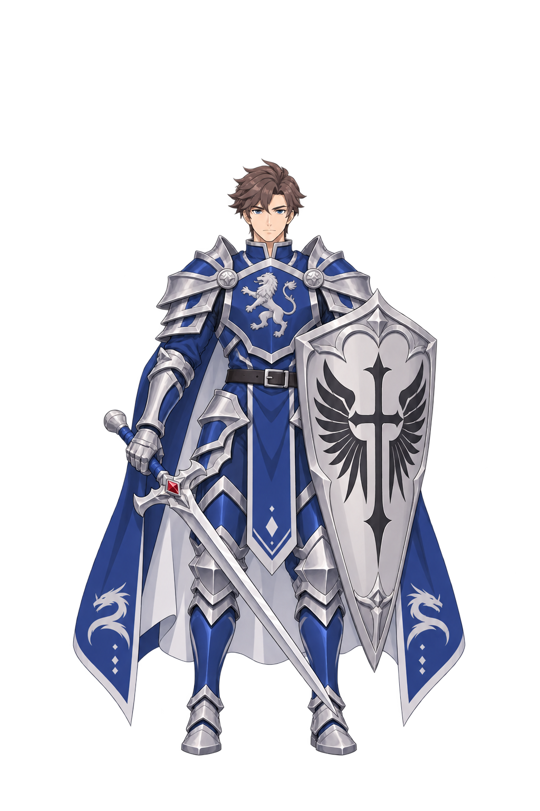

발로르 SD 정면 · 대기45° · 오른쪽90°
MAIN03-20261109-5133411E / 차수1 / main03 → sprites · SD-STD-002 신규2안(ID6)
상태: 실제 PNG 3장 제작 및 자체 검수. 기술검수 미달: 유색 외곽/저알파 잡점, 원본 발선 차이 12px. 사용자 미적 합격 대기. 정면 정리 후보는 픽셀 표현이 달라져 미채택.
전체 프레임 · 클릭하면 원본 확대
실제 작은 표시 · 본체 키와 발점으로 배치
검수용 표시이며 실제 게임 통합 화면은 아닙니다. 장비 외곽이 아닌 모발 상단~발바닥 본체 키로 균일 배율 적용, 발점 y=160으로 표시만 정렬합니다. PNG 바이트는 변경하지 않습니다.
측정과 분리
투명여백: alpha 범위 / 본체 키: 시각적 모발 상단~발바닥 / 기준점: 지지 발점 / 표시범위: alpha≥16 참고 / 피해판정: 미정·미구현. 해부학 정수리~턱 수치나 게임 절대 키를 확정하지 않았습니다.
디자인 원본과 최신 SD 비율 참조
발로르 v02 · 정체성만

신규2안 · 정면

신규2안 · 45°

신규2안 · 90°

검수 메모
정면: 중립 두발 지지, 양쪽 눈과 가슴 정면. 대기: 오른쪽3/4로 얼굴·가슴 앞면 함께 보임, 무기를 낮게 든 안정 자세. 오른쪽90°: 한쪽 눈/코 윤곽, 가슴과 방패 edge-on, 오른손 검이 가까운 쪽, 왼손 방패와 먼 발은 가림. 가려진 왼손 손가락 연결은 직접 확인 불가.
원본1:1에서 일부 고채도 외곽을 확인했습니다. 알파255가 아닌 내부 주값253과 아주 낮은 알파 잡점도 보존되어 있습니다. 실제 전장 통합/독립 테스터 검수/최종 사용자 합격은 수행하지 않았습니다.
미채택 생성 기록
90도 첫 후보는 가슴 앞면이 넓어 방향 보정. 정면 알파 정리 후보는 픽셀 표현 변화로 미채택.